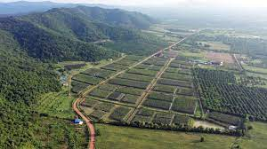

<!DOCTYPE html>
<html lang="en">
</body>
</html>
<head>
  <meta charset="UTF-8">
  <meta name="viewport" content="width=device-width, initial-scale=1.0">
  <title>Discover Kampot - Unforgettable Travel Experiences</title>
  <link rel="stylesheet" type="text/css" href="styles.css">
</head>
<style>
    body {
  font-family: 'Times New Roman', Times, serif;
  font-size: 18px;
  margin: 0;
  padding: 0;
  background-color: #f5f5f5;
}

header {
  background-color: lightskyblue;
  color: #fff;
  padding: 20px;
  display: flex;
  justify-content: space-between;
}

header h1 {
  font-size: 2em;
  margin-bottom: 0;
}

nav ul {
  list-style: none;
  margin: 0;
  padding: 0;
}

nav li {
  display: inline-block;
  margin-right: 20px;
}

nav a {
  text-decoration: none;
  color: inherit;
}

#banner {
  width: 100%;
  height: 300px;
  overflow: hidden;
}

#banner img {
  width: 100%;
  height: 100%;
  object-fit: cover;
}

main {
  padding: 20px;
}

section {
  margin-bottom: 40px;
  padding: 20px;
  border-radius: 5px;
  background-color: #fff;
  box-shadow: 0 0 10px rgba(0, 0, 0, 0.1);
}

section h2 {
  text-align: center;
  margin-bottom: 20px;
}

.destination-cards {
  display: flex;
  flex-wrap: wrap;
  justify-content: space-around;
  gap: 20px;
}

article {
  width: 30%;
  text-align: center;
}

article img {
  width: 100%;
  height: 150px;
  object-fit: contain;
  border-radius: 5px;
}

article p {
  margin-top: 10px;
}

footer {
  text-align: center;
  padding: 10px;
  background-color: #2980b9;
  color: #fff;
}
</style>
<body>
  <header>
    <h1>Uncover the Enchantment of Kampot Province</h1>
    <nav>
      <ul>
        <li><a href="destination.html">Destinations</a></li>
        <li><a href="Activities.html">Activities</a></li>
        <li><a href="Explore more.html">Explore More</a></li>
      </ul>
    </nav>
  </header>

  <main>

    <section id="destinations">
      <h2>Captivating Destinations</h2>
      <div class="destination-cards">
        <article>
          
          <h3>Kampot Town</h3>
          <p>French charm meets Cambodian serenity. Explore markets, riverside walks, and bicycle adventures.</p>
        </article>
        <article>
          
          <h3>Phnom Bokor National Park</h3>
          <p>Trek through mountains, discover hidden waterfalls, and delve into Bokor Hill Station's mysteries.</p>
        </article>
        <article>
          
          <h3>Kampot Pepper Plantations</h3>
          <p>Kampot is famous for its high-quality pepper, and there are several pepper plantations in the province that offer tours and tastings.</p>
        </article>
      </div>
    </section>

    <section id="activities">
      <h2>Unforgettable Activities</h2>
      <p>Beyond sightseeing, discover experiences that linger in your memory.</p>
      <ul>
        <li>Pepper Plantation Tours and Tastings</li>
        <li>Kayaking on the Kampot River</li>
        <li>Cooking Classes with Local Chefs</li>
        <li>Caving Adventures at Phnom Chhnork</li>
      </ul>
    </section>

    <section id="exploreMore">
      <h2>Explore More of Cambodia</h2>
      <p>Kampot is just a captivating chapter in Cambodia's rich story. Discover other destinations to weave into your adventure.</p>
      <a href="#">Phnom Penh</a>,
      <a href="#">Battambong</a>,
    </section>
  </main>

  <footer>
    <p>&copy; Travelling Destination 2024</p>
  </footer>
</body>

</html>